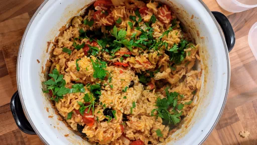

1 hr 10 mins
Serves 6VegetarianVeganDairy FreeGluten Free
Spanish

This is great for feeding a hungry crowd and is vegan and gluten-free!
Ingredients
2 tbsp olive oil
1 large onion, sliced
2 bulbs fennel, cut into thin wedges
3 cloves garlic, crushed
1 tbsp smoked paprika
½ tsp chilli flakes (optional)
300 g paella rice
1 litre vegetable stock, use GF stock if required
2 bay leaves
1x 250 g pack pomodorino or baby plum tomatoes, halved
150 g pitted olives (a mix of colours and varieties, if you like)
15 g flat-leaf parsley, finely chopped
juice of ½ lemon, plus wedges to serve
Instructions
Heat the oven to 160°C/Gas 4. Heat the oil in a wide, shallow ovenproof casserole or large frying pan. Fry the onion and fennel until the fennel is tender when pierced with a knife, about 10-15 minutes. Add a splash of water if the onion starts to catch. Add the garlic and spices and fry for another minute.
Add in the rice, and fry for a few minutes, mixing with the veg. Pour over the stock, add the bay leaves and season well, as the rice will absorb quite a bit of salt. Bring to a simmer, then stir in the tomatoes and olives, and transfer to the oven, uncovered.
Bake for 30-35 minutes until the rice is tender and the stock has been absorbed. Cover with a lid or baking sheet and leave to steam for 10 minutes. Scatter with the parsley and squeeze over the lemon before serving with more lemon wedges.